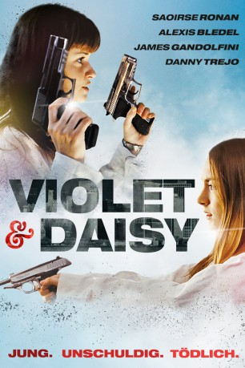
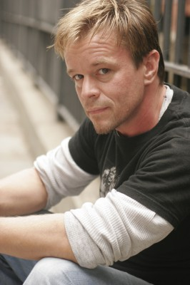

#8627 Violet & Daisy - Jung. Unschuldig. Tödlich.
Alternativ: Violet & Daisy
 
 IMDB-Wertung: 6.1 / 10
IMDB-Wertung: 6.1 / 10  Metascore: 0
Metascore: 0 
Violet und Daisy – sehen vielleicht unschuldig aus. Doch weit gefehlt, die beiden sind Profikillerinnen und von einem verärgerten Gangsterboss auf Michael angesetzt. Ein Routineauftrag, wie es scheint: Rein in die Wohnung, Kerl erschießen, raus, Geld kassieren und sich endlich ein Kleid von Barbie Sunday leisten! Doch Michael ist kein gewöhnliches Opfer. So hatten sich die zwei das nicht vorgestellt!
Jahr: 2011
Dauer: 88 Minuten
FSK: 16
Land: USA Studio: Cinedigm Entertainment GroupTonspuren:
Untertitel: Deutsch,
Auflösung: 720p (1280x536) Größe: 2007 MB
Genre: Action, Thriller, Drama, Komödie, Krimi
Regisseur: Geoffrey Fletcher
Drehbuch: Geoffrey Fletcher
Soundtrack: Paul Cantelon
Darsteller:
 Saoirse Ronan als Daisy
Saoirse Ronan als Daisy Alexis Bledel als Violet
Alexis Bledel als Violet James Gandolfini als The Guy
James Gandolfini als The Guy Marianne Jean-Baptiste als Number 1
Marianne Jean-Baptiste als Number 1 Danny Trejo als Russ
Danny Trejo als Russ Tatiana Maslany als April
Tatiana Maslany als April- Cody Horn als Barbie Sunday
 John Ventimiglia als Man #1
John Ventimiglia als Man #1- Stu 'Large' Riley als Man #2
- Neville Archambault als Man #3
 Danny Hoch als Man #4
Danny Hoch als Man #4 Tuffy Questell als Kidnapped Man
Tuffy Questell als Kidnapped Man- Nick Choksi als Desk Officer
- Gary Hope als Hardware Store Cashier
- Chris Colombo als Hardware Store Perp
- Bettye Fletcher als Doll Hospital Patron
 Jeff Grossman als Police Officer (uncredited)
Jeff Grossman als Police Officer (uncredited)- Cassidy Hinkle als June (uncredited)
- Jeffrey M. Marchetti als Police Officer Down (uncredited)
 Ismaelpeter Casillas Nelson als School Boy (uncredited)
Ismaelpeter Casillas Nelson als School Boy (uncredited)-  Leif Riddell als Shooter #2 (uncredited)
- Tatsumi Romano als Doll Hospital Nurse (uncredited)
 Uzimann als Pedestrian (uncredited)
Uzimann als Pedestrian (uncredited)- Lynda Gravatt als Dolores
- Morgan Demeola als Anna (uncredited)
- Danielle DeSantis als School Girl (uncredited)
- Paul Thornton als Pedestrian (uncredited)
- Vesta Tuckute als Annie (uncredited)
- Emerald-Angel Young als May (uncredited)
Datei: X:\2011(N-Z)\Violet & Daisy - Jung. Unschuldig. Tödlich. (2011, FSK16, 1280x536).mkv seit 25.03.2018
Festplatte: HD 2011(G-Z)
 Es gibt insgesamt 132 Filme in der Gruppe '2011(N-Z)'
Es gibt insgesamt 132 Filme in der Gruppe '2011(N-Z)'